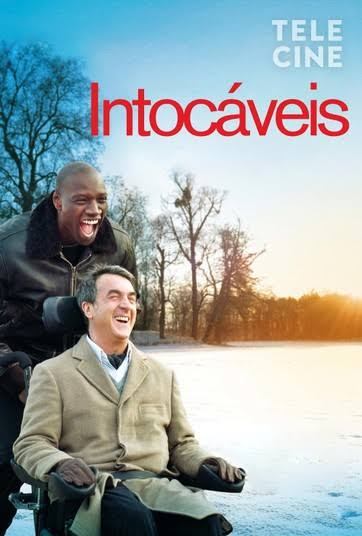

Philippe, um milionário aristocrata que ficou tetraplégico após um grave acidente de parapente, precisa contratar um assistente para cuidar de seu dia a dia. Ele acaba escolhendo Driss, um jovem dossubúrbios recém-saído da prisão que demonstra não ter a menor paciência para o cargo. Apesar dos mundos completamente opostos, uma improvável e forte amizade cheia de humor e emoção floresce entre os dois.